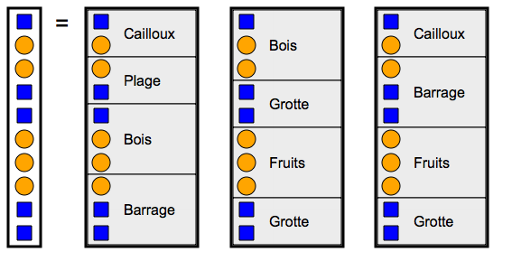

إشارات الألوان
يتواصل القنادس عن طريق إرسال إشارات بالألوان
أوجد متتالية واحدة من الكلمات المتاحة لتطابق الرسالة بالأسفل
أوجد 3 متتاليات من كلمات مختلفة لتطابق الرسالة بالأسفل
يتواصل القنادس عن طريق إرسال إشارات بالألوان
أوجد متتالية واحدة من الكلمات المتاحة لتطابق الرسالة بالأسفل
أوجد 3 متتاليات من كلمات مختلفة لتطابق الرسالة بالأسفل
Deux solutions étaient possibles.
| Solution 1 : | Solution 2 : |
 |
 |
Voici les 3 séquences à trouver.

Voici les 3 séquences à trouver.

Pour trouver les séquences, on peut procéder de manière systématique. On essaie parmi les mots possibles ceux qui peuvent correspondre au début. Dès qu'on a trouvé un mot, on essaie de compléter la suite. Si on n'arrive pas à obtenir une nouvelle séquence, on revient en arrière, et on essaie un autre mot qui pourrait se placer à la position courante.
Cette idée de revenir en arrière pour explorer de manière systématique l'ensemble des solutions possibles est très utile en informatique. En effet, de nombreux problèmes peuvent se résoudre sans réfléchir, « simplement » en effectuant des millions ou des milliards d'étapes de calcul. Attention : ce qui est « simple » pour un ordinateur ne correspond en général pas à ce qui est « simple » pour un être humain !